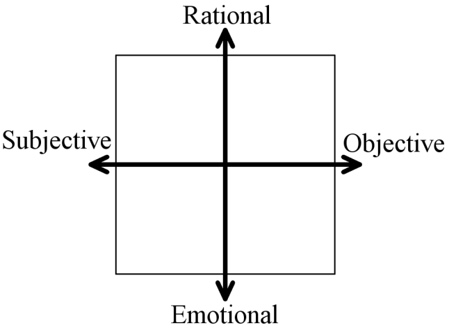

Styles of Argumentation

I’d like to preface the following statements with a brief disclaimer:
I very often worry about how my desire for brutal simplification of ideas could be regarded as intellectual ignorance. For this reason I feel obliged to point out that I am the furthest possible thing from an expert in any scientific field and the ideas I present in this blog should mostly be regarded as my own personal pseudo-scientific tools, which I use to better understand the world around me. They are by no means rigorous scientific theories, but rather unpolished ramblings of a person, lost in a complex soup of ideas.
With that out of the way, back to the topic. As a person, who is very interested by debates and discussions of ideas (listening to those is a favourite pastime of mine), I thought it would be a good exercise to try and categorise the types of arguments people make. So far, I have determined two main axes to differentiate by and graphed them on a two-dimensional chart as such:
Of course, single-word definitions are not sufficient to explain the axes, so let me elaborate:
The Objective <> Subjective axis can be thought of as differentiating between arguments, which involve reason, evidence, logic and material matters (the Objective side) and arguments, which involve personal situations, feelings, experiences and beliefs (the Subjective side).
Two examples of statements on the opposite sides of this axis are:
– People with disabilities often perform just as well in the workplace as people who claim no disabilities. (objective)
– My brother is disabled and I wouldn’t want him to be discriminated against in the workplace. (subjective)
The Rational <> Emotional axis can be thought of as differentiating between arguments, which appeal to the logical and reasonable side of the listener (the Rational side) and arguments, which appeal to the emotional and empathetic side of the listener (the Emotional side).
Two examples of statements on the opposite sides of this axis are:
– His beliefs are based on faulty assumptions. (rational)
– His beliefs are dangerous and threaten the structure of our society. (emotional)*Note: To make the differences between the two axes clear, in the examples for the Objective <> Subjective axis both can be classified as Rational by the second axis, and in the examples for the Rational <> Emotional axis both can be classified as Objective by the first axis.
Now, with the axes explanations out of the way, the next logical step would be to give some examples of how the two axes intertwine. For this purpose I have colour-coded all four quadrants – Blue for rational, Red for emotional, Light for subjective and Dark for objective:
Examples of arguments by quadrant:
Light-Blue: I don’t want clowns at the party, because I find them unsettling. Dark-Blue: Clowns rarely make a party more enjoyable. Light-Red: Please don’t have clowns at the party, I am extremely terrified of them! Dark-Red: Clowns are the easiest way to completely ruin a party and your reputation along with it! Can you spot the differences of style? All four statements argue the same point – Why not to have clowns at the party, but the styles represent all four quadrants of the chart.
Light-Blue makes a personal, subjective argument, in an attempt to appeal to the host’s rational reasoning and convince him to take into account the comfort of the speaker. Dark-Blue presents an objective, impersonal reason in a manner, which is dispassionate and rational, in an attempt to appeal to the host’s desire to organise a more enjoyable party for everyone. Light-Red makes a personal, subjective argument in an passionate manner, in order to appeal to the host’s empathy for the speaker and induce an emotional response. Dark-Red makes an objective, impersonal argument, but phrases it in a highly emotional manner, in order to elicit a reaction of anxiety in the host. Some discussions tend to stay in roughly the same quadrant of the chart throughout the whole process, for example – in an academic environment every argument, which strays away from the Dark-Blue quadrant is almost immediately dismissed as unscientific. (except of course in the social ‘sciences’, but that’s a topic for another day)
While other discussions might change between two or more styles. For example – a political debate might start off as a Dark-Blue discussion about economic theory, then as one side loses ground, move to a Light-Blue style of discussing personal values and then eventually end up devolving to a Dark-Red style with statements, such as “Your political ideas are fascist in nature and the laws you are proposing are draconian and undemocratic!”
And finally,
I should point out that none of these styles can be considered superior than others and each have their advantages and disadvantages. Most of the styles have a specific niche to fill and should be interchanged as the situation demands. Of course, it would be unreasonable to use emotional arguments in a scientific discussion, highly ineffective to fight against an oppressive government using dispassionate statements and utterly hopeless to attempt to rationally talk a woman in ‘that’ time of the month out of a bucket of ice cream. Each of the styles should be part of the toolbox for every person, who wants to be maximally persuasive to people of various character and emotional state.
Petar Peychev